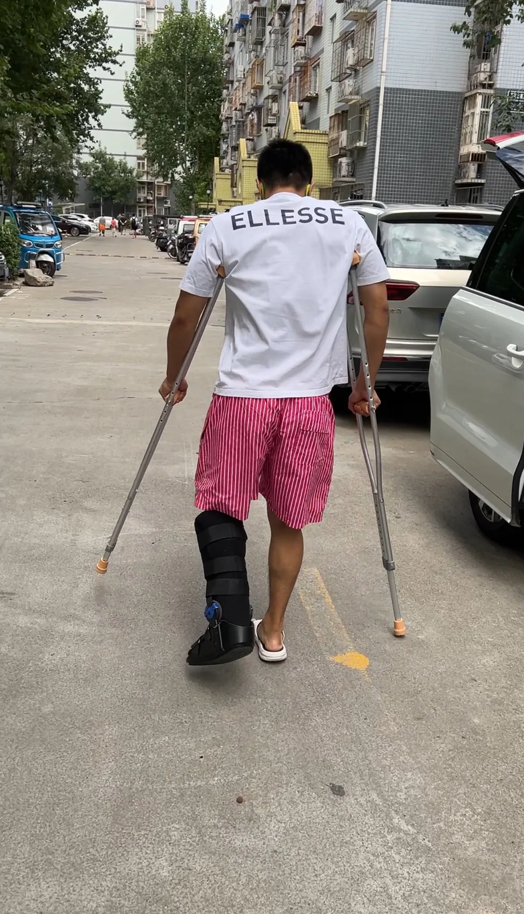
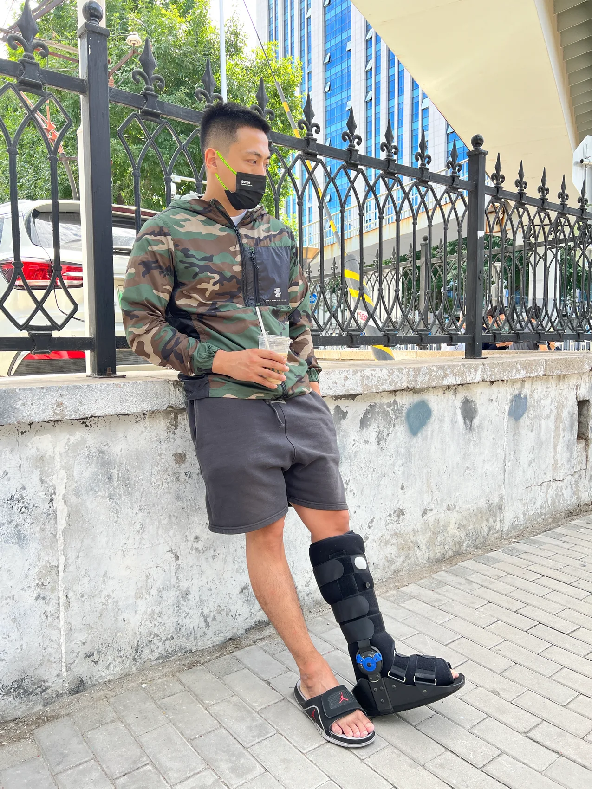
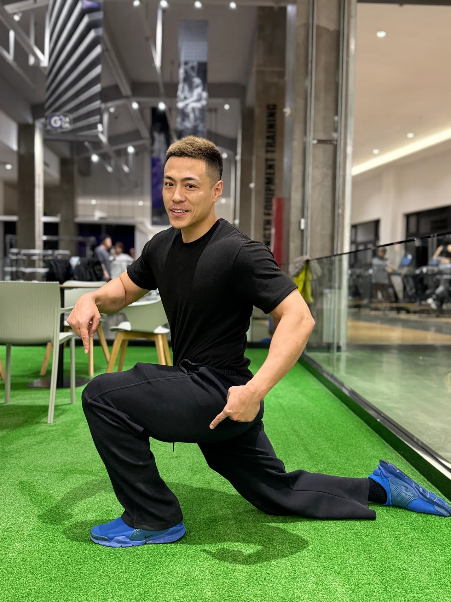
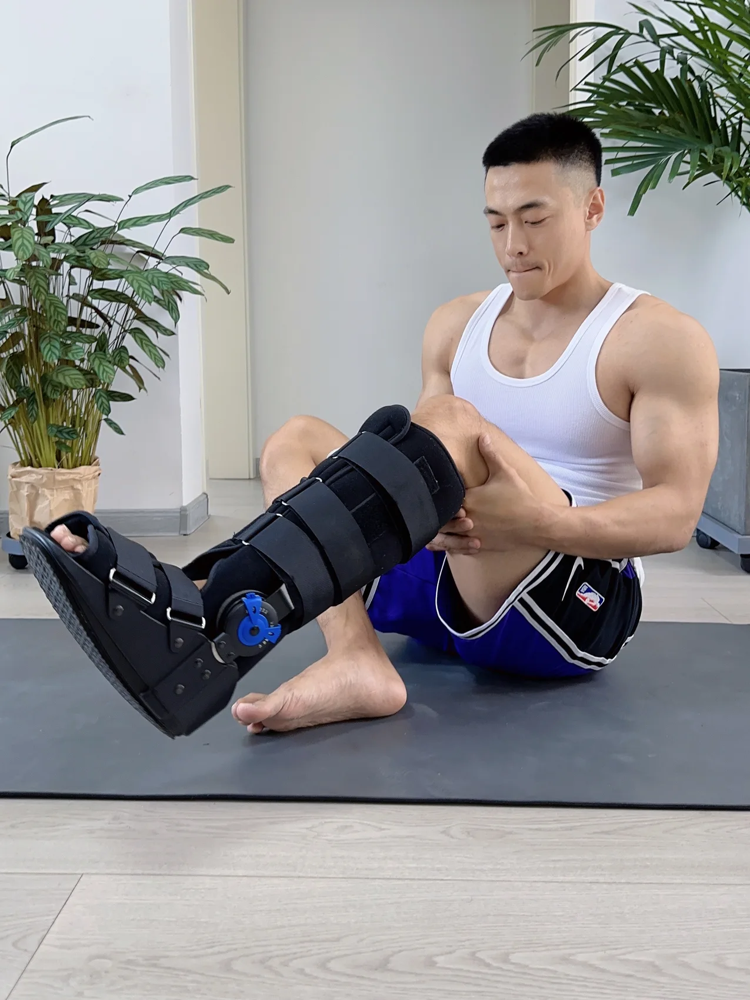
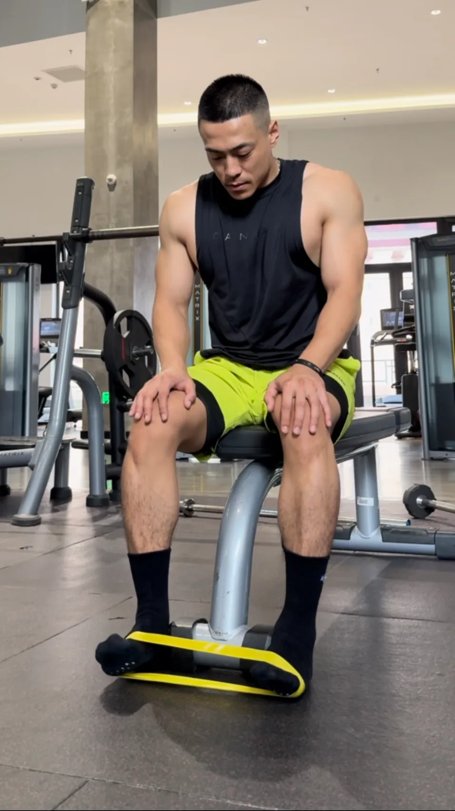

术后不能正常使用伤腿，肌肉萎缩、脚踝僵硬。连正常走路，都变成了一个需要重新学习的目标。
“我根本不知道自己现在做的事情，
到底对不对。”
这份不确定，我经历过。所以这套基础营的第一步，是让你先知道自己的边界和起点。
14天基础复训启动陪跑
我也曾拄着拐，不敢把重量交给这只脚。
我是 Dee。我把自己的康复经历与系统学习，整理成一条从基础开始、按能力推进的复训路径。
14天是陪跑周期。身体恢复，走你自己的进度。

DEE / PERSONAL ARCHIVE01THE STORY BEHIND THE CAMP
反复崴脚，双侧脚踝韧带损伤。
一侧手术重建，一侧保守恢复。
这些照片，是我走过这段路的真实记录。
从支具与双拐，
到重新找回控制。


术后不能正常使用伤腿，肌肉萎缩、脚踝僵硬。连正常走路，都变成了一个需要重新学习的目标。
“我根本不知道自己现在做的事情，
到底对不对。”
这份不确定，我经历过。所以这套基础营的第一步，是让你先知道自己的边界和起点。

我开始记录疼痛、肿胀、做过的训练，以及第二天的状态。那些细小的反应，成为理解身体的线索。
我的康复笔记，
从一次次观察开始。
与此同时，我开始系统学习功能解剖、肌动学、运动康复和力量体能训练，让个人体会有知识依据。

从重新活动、逐渐承重，到重新学习走路。我一点点把基础能力练回来，也把过程中的学习整理成今天的课程。
把走过的路整理清楚，
陪你找到自己的下一步。
照片呈现的是我的个人训练经历，不是统一动作处方。你可以做什么，始终取决于自己的医学边界和当前能力。
个人经历提供路线感，不代表相同的恢复期限或结果。
02FROM EXPERIENCE TO METHOD
课程来自我的个人康复笔记，也经过系统学习与知识校验，最终转化成你每天能够理解、执行和记录的任务。
我想交给你的，
是理解自己身体的能力。
不敢动、不敢踩，以及“不知道这样做对不对”。从亲身恢复过程出发，把普通人的困惑放在课程前面。
结合功能解剖、肌动学、足踝功能、运动康复与力量体能知识，校验各阶段的设计逻辑。
把复杂知识转成今天学什么、做什么、记录什么，以及什么时候保持、减量或暂停推进。
我的经历不是你的医学标准答案，教材也不是每个人的统一处方。医学边界 + 当前能力 + 身体反应，始终共同决定进度。
03YOUR FOUNDATION MAP
10关是一条学习与能力路径。
了解每一关为什么存在，
在条件允许时，才向下一步推进。
先了解当前的医学限制，再学会观察身体反馈。知道从哪里开始，才知道如何向前。
了解医学限制、负重要求和当前允许的活动。术后与保守恢复，都需要先明确自己的起点。
认识训练前、训练中、训练后约2小时和第二天的身体反应。疼痛数字只是信息之一。
足趾主动活动、触觉感知、大脚趾基础控制，以及足底不同区域的认识。
学习舒适体位与基础轻活动原则。当前允许什么，就做什么，不追求统一角度或时长。
认识勾脚与绷脚，学习基础主动控制和左右差异记录，不追求暴力掰角度。
了解踝背屈与承重、走路、上下楼的关系。系统性负重背屈训练属于下一阶段。
了解股四头、臀部和核心基础激活，以及个人医学限制允许范围内的其他区域活动。
从坐姿足底接触与压力转移，到符合条件者的辅助站立与重量转移。医学边界和能力允许后才解锁。
学习三角度步态拍摄与短距离观察，认识明显代偿，逐步建立基础控制。
对比基础生活、足底参与、主动活动、承重与步态，结合连续训练反应完成阶段复盘。
10关不是必须按天完成的闯关任务。未达到条件时，继续当前适合的模块；基础营只做基础对线与代偿观察，不做统一姿势纠正。
ONE CALENDAR. YOUR OWN PACE.
到了 Day 10，还没有承重条件，就不承重。
到了 Day 12，不适合步态练习，就继续巩固基础。
14天是第一轮基础复训启动陪跑，不是统一的恢复期限。
04A SMALL DAILY PRACTICE
有东西学，有适合自己的练习，
也有反应需要记录。
先用 Day 0，建立自己的初始记录。
理解当天的核心认知与动作方法。
按当前模块与训练卡执行对应练习。
巩固前面的基础能力，不赶别人的进度。
留下从训练前到第二天的身体反馈。
记录当前的不适、肿胀趋势和生活能力。留下训练前的参照，才有后面的对比。
留意动作质量、练习中的感觉，以及是否出现新的异常。训练不只是完成次数。
训练后约2小时，观察不适、肿胀、僵硬与功能变化，补上即时感觉之外的信息。
与训练前作对照，观察走路和生活能力的变化，帮助判断身体对本次负荷的反应。
Day 0完成使用说明、安全筛查、初始记录和社群规则阅读，建立训练反应表，不安排训练。每天不统一训练时长。
05WHAT YOU WILL RECEIVE
标准版把课程、任务、训练卡、记录与集中反馈连接起来。逐渐理解自己的身体，也逐渐学会判断。
每天有任务。每次有记录。
第14天，带着变化完成阶段复盘。
13条核心认知，18条训练与操作。先理解为什么，再在条件允许时执行。
安全筛查、训练反应、基础能力、步态观察与Day 14阶段复测。
覆盖安全与感知、控制与激活、承重步态与复测。时间以开营安排为准。
围绕足趾足底、符合条件后的承重和步态，进行代表性作业公开抽评。
标准版通过系统课程、每日任务、结构化记录、群内提问、固定直播与代表性作业抽评交付。不承诺每位学员的每段视频都获得1对1点评，不提供24小时私人聊天、无限动作点评或每日重写个人训练计划。具体反馈窗口在开营前公布。
06START WHERE YOU ARE
申请后先进行入营筛查，
确认阶段与服务适配性。
不只看受伤多久，更看你现在需要什么。
术后用户可以申请。主刀医生或相关医疗人员明确的负重要求、活动范围、禁忌动作、允许阶段与复查节点始终优先。
07BEFORE YOU BEGIN
了解这套训练营能做什么，
也了解它的服务边界。
不能这样理解。14天是第一轮基础复训启动陪跑周期，不是身体恢复期限承诺。学习按日历推进，训练根据医学边界、当前能力与身体反应调整。
不一定。先完成必要的医学风险排查，再判断是否处于基础营目前能够服务的阶段。
可以申请。医生明确的负重、活动范围和禁忌要求始终优先。课程不会用其他学员的进度替代你的医学边界。
看的是目前卡在哪个能力阶段，而不只看受伤多久。如果已经能够正常生活，主要需要力量、单脚稳定、动态控制和跑跳，可能更适合第二阶段。
根据当天任务与个人能力调整，不要求统一训练时长。不适不能只看疼痛数字，还要结合性质与变化、肿胀、动作质量、训练后及第二天反应，以及生活能力的变化。新的损伤或明显异常应优先医学评估。
标准版不提供无限私人动作点评，主要通过系统课程、结构化提问、固定直播与代表性作业抽评交付。
课程不提供医学影像诊断，也不判断韧带是否愈合。结构与影像判断应由相应医疗专业人员完成。
根据阶段复测，可能继续巩固当前能力、退回对应模块，或进入第二阶段资格评估；如果出现异常，则暂停训练推进并优先处理相关问题。
YOUR NEXT STEP STARTS HERE
脚踝运动复训基础营 · 14天启动陪跑
入营申请入口待公布
入口开放后，先完成筛查与阶段确认。本页暂不收集报名或健康信息。